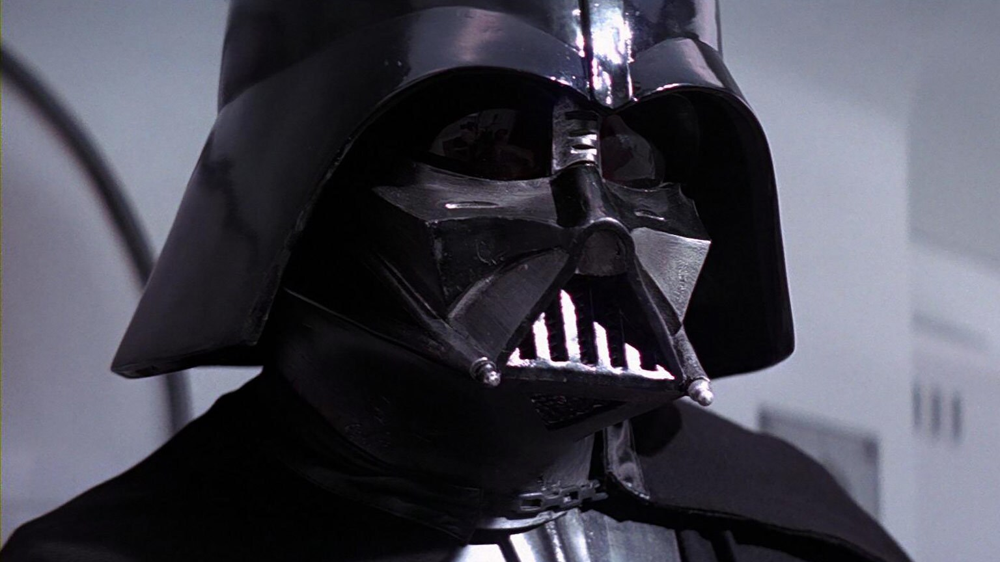

Bibliografia
Presentacion
the heroic Jedi Knight named Anakin Skywalker, Darth Vader was seduced by the dark side of the Force. Forever scarred by his defeat on Mustafar, Vader was transformed into a cybernetically-enhanced Sith Lord. At the dawn of the Empire, Vader led the Empire’s eradication of the Jedi Order and the search for survivors. He remained in service of the Emperor -- the evil Darth Sidious -- for decades, enforcing his Master’s will and seeking to crush the Rebel Alliance and other detractors. But there was still good in him…
Mas Datos: Nombre: Anakin Skywalker (luego renombrado a Darth Vader) Fecha de nacimiento: 41 BBY (45 Años) Padres: Shmi Skywalker (Anakin no tiene padre como tal) Alias: Darth Vader Hermanos: Ninguno Estado civil: Viudo Fecha de defuncion: 4BY Hijos: Luke Skywalker y Leia Organa Infancia Adolecencia Adultez